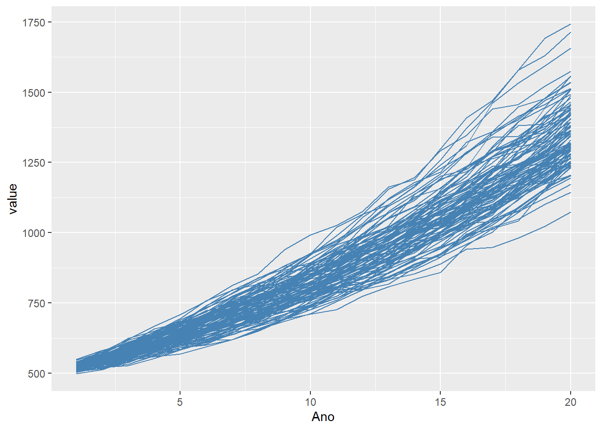
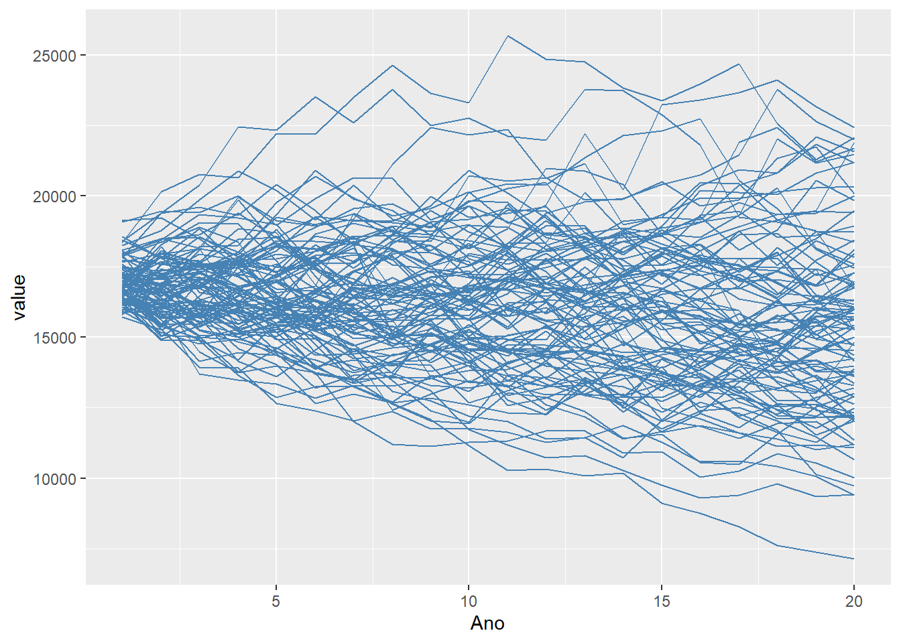
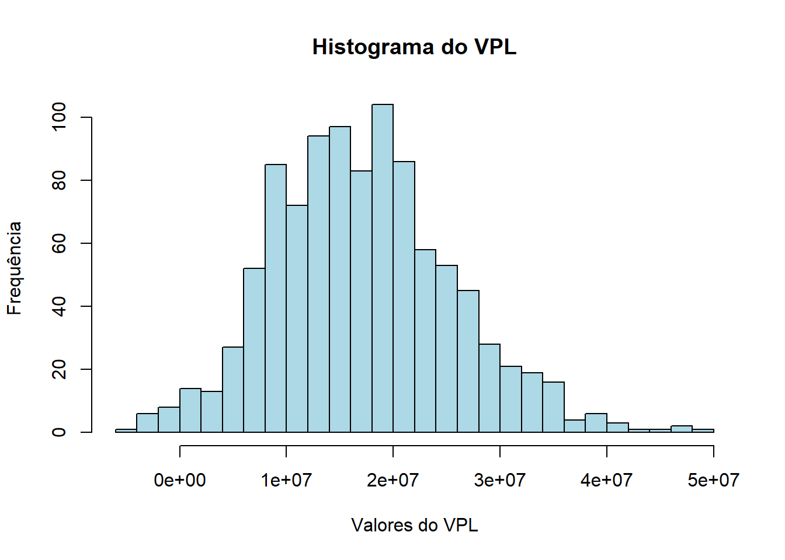

#install.packages('dplyr')
#install.packages('ggplot2')
#install.packages("reshape2")
library(dplyr)
library(ggplot2)
library(reshape2)
rm(list=ls())Rotina para avaliação de projeto de energia usando opcoes reais - Quarto (usando o Quarto)
1- Introdução
Este exercício apresenta um estudo de caso de avaliação de uma usina de energia solar usando opções reais.
Abra o arquivo e inicie as bibliotecas com o comando library. Caso as bibliotecas não estejam disponíveis (instaladas na sua máquina) descomente (retire o “#”) as linhas abaixo de install.packages, execute as linhas e comente-as novamente para evitar que as bibliotecas sejam reinstaladas toda vez que executar o código.
Veja que em seguida o código limpa o ambiente das variáveis com rm(list = ls())
2- Inicialização das variáveis e parâmetros
Primeiro, vamos inicializar os dados de investimento inicial
#Dados de entrada
#-----------------------------------
qMW <- 10 #potencia do parque
fatorCap <- 0.2 #fator de capacidade
q0 = qMW*24*365*fatorCap #producao anual de energia
p0 = 500 #preco da energia
invInicial = 50000000 #investimento inicial
custManut = 0.01 #custo de manutencao (perc sobre o inv inicial)
miManut = 0.05 #taxa de crescimento do custo de manutencao
custoVar = 0.005 #custo variavel
custoManIni = invInicial * custManut
nyears = 20 #Numero de anos do parque
cust_manut = matrix(0, 1, nyears)
med_prec = 0.05 #taxa de crescimento anual do preço da energia
vol_prec= 0.02 #volatilidade anual do preço da energia
med_prod <- -0.0075 #media de crescimento/queda anual da produção
vol_irradia <- 0.05 #volatilidade anual da produção
taxa_desc = 0.15 #taxa de desconto
taxa_lr = 0.1 #taxa livre de risco
tempo_decisao = 1 #tempo para tomar decisao
dividendo <- 0.05 #dividendo pago se projeto for implantado
#emprestimo
razaoEmprestimo <- 0. #razão de capital de terceiros (empréstimo)
empNominal = razaoEmprestimo * invInicial #total do empréstimo
jurosEmp = 0.1057 #juro cobrado no empréstimo
pAmortiza = empNominal/nyears #número de anos de amortização do empréstimo
#Parametros da Simulacao
set.seed(0) #semente de geração dos números aleatórios
ncenarios = 1000 #número de cenários
#----------------------------------------Inicializando variaveis auxiliares
#Emprestimo
amortiza = matrix(pAmortiza, 1, nyears)
juros = matrix(0, 1, nyears)
saldoD = empNominal + pAmortiza
for (i in 1:nyears){
saldoD = saldoD-pAmortiza
juros[1,i] = saldoD *jurosEmp
}
#Inicializacao de variaveis
pener = matrix(0, ncenarios, nyears) #preco de energia
qener <- matrix(0, ncenarios, nyears) #quantidade de energia
vp1 = matrix(0, ncenarios, 1) #valor presente no ano 1
vp0 = matrix(0, ncenarios, 1) #valor presente no ano 0
vp_Ref0 = matrix(0, ncenarios, nyears) #fluxo de caixa descontado até o ano 0
vp_Ref = matrix(0, ncenarios, nyears) #fluxo de caixa descontado até o ano 1
fat_desc = matrix(0, 1, nyears) #fator de desconto para o ano 1
fat_desc0 = matrix(0, 1, nyears) #fator de desconto para o ano 0
#Calculo dos fatores de desconto para o ano 0 e ano 1
for (i in 1:nyears)
{
fat_desc[1,i] = 1/(1+taxa_desc)^(i-1)
fat_desc0[1,i] = 1/(1+taxa_desc)^(i)
}
#Custo de manutencao
cust_manut[1,1] = custoManIni * (1+miManut)
for (i in 2:nyears)
{
cust_manut[1,i] = cust_manut[1,i-1] * (1+miManut)
}3- Gerando cenários de preços e quantidades
# Cenarios de preco de energia
for (i in 1:ncenarios)
{
pener[i,1] = p0*exp(med_prec -vol_prec/2+ rnorm(1,mean=0,sd=vol_prec))
qener[i,1] = q0*exp(med_prod -vol_irradia/2 + rnorm(1,mean = 0, sd=vol_irradia))
}
for (i in 1:ncenarios)
{
for (j in 2:nyears)
{
pener[i,j] = pener[i,j-1]*exp(med_prec + rnorm(1,mean=0,sd=vol_prec))
qener[i,j] = qener[i,j-1]*exp(med_prod + rnorm(1,mean=0,sd=vol_irradia))
}
}
dfPener <- data.frame(t(pener[1:100,]))
dfAnos <- data.frame(Ano=c(1:nyears))
dfPener <- cbind(dfAnos, dfPener)
dfPener <- melt(dfPener, id=c("Ano"))
p<-ggplot(dfPener, aes(x=Ano, y=value, shape=variable))+geom_line(color="steelblue")
print(p)Warning: The shape palette can deal with a maximum of 6 discrete values because more
than 6 becomes difficult to discriminate
ℹ you have requested 100 values. Consider specifying shapes manually if you
need that many have them.
dfQener <- data.frame(t(qener[1:100,]))
dfAnos <- data.frame(Ano=c(1:nyears))
dfQener <- cbind(dfAnos, dfQener)
dfQener <- melt(dfQener, id=c("Ano"))
p<-ggplot(dfQener, aes(x=Ano, y=value, shape=variable))+geom_line(color="steelblue")
print(p)Warning: The shape palette can deal with a maximum of 6 discrete values because more
than 6 becomes difficult to discriminate
ℹ you have requested 100 values. Consider specifying shapes manually if you
need that many have them.
4- Calculando os fluxos financeiros
for (i in 1:ncenarios)
{
for (j in 1:nyears)
{
vp_Ref[i,j] <- (qener[i,j] * pener[i,j] * (1-custoVar) - cust_manut[1,j] - amortiza[1,j] - juros[1,j]) * fat_desc[1,j]
vp_Ref0[i,j] <- (qener[i,j] * pener[i,j] * (1-custoVar) - cust_manut[1,j] - amortiza[1,j] - juros[1,j]) * fat_desc0[1,j]
}
vp1[i,1] <- sum(vp_Ref[i,1:nyears])
vp0[i,1] <- sum(vp_Ref0[i,1:nyears])
} 5-Volatilidade do projeto
#Volatilidade do projeto
ret_proj <- log(vp1[,1]/mean(vp0[,1]))
volProj <- sd(log(vp1[,1]/mean(vp0[,1])))
dfVP0 <- data.frame(vp0)
fc0 <- invInicial * (1-razaoEmprestimo)
vpl <- dfVP0$vp0 - fc0
hist(vpl,
breaks = 30, # Número de barras
main = "Histograma do VPL", # Título principal
xlab = "Valores do VPL", # Título do eixo X
ylab = "Frequência", # Título do eixo Y
col = "lightblue", # Cor do histograma
border = "black") # Cor das bordas das barras
6- Aplicando a equação de Black and Scholes
#Black and Scholes
# Função para calcular o preço da call
black_scholes_call <- function(S, K, vol, r, t, d) {
# Calcula d1 e d2
d1 <- (log(S / K) + (r - d + 0.5 * vol^2) * t) / (vol * sqrt(t))
d2 <- d1 - vol * sqrt(t)
# Calcula o preço da call
call_price <- S * exp(-d * t) * pnorm(d1) - K * exp(-r * t) * pnorm(d2)
return(call_price)
}
S <- mean(vp0[,1])
K <- fc0
vol <- volProj
r <- taxa_lr
t <- tempo_decisao
d <- dividendo
# Calcula o preço da call
preco_call <- black_scholes_call(S, K, vol, r, t, d)
print(preco_call)[1] 186639187- Analisando o critério de opções reais
cat("S ", format(S, nsmall = 2))S 67176085.60cat("K", format(K, scientific = FALSE, nsmall = 2))K 50000000.00print(paste("Vol", format(vol, nsmall = 2)))[1] "Vol 0.1252693"print(paste("taxa", taxa_desc))[1] "taxa 0.15"print(paste("taxa livre de risco", taxa_lr))[1] "taxa livre de risco 0.1"print(paste("dividendos", d))[1] "dividendos 0.05"print(paste("Tempo decisao", t))[1] "Tempo decisao 1"print(paste("VPL Referencia", format(S-K, nsmall = 2)))[1] "VPL Referencia 17176085.60"print(paste("VPL Expandido", format(preco_call, nsmall = 2)))[1] "VPL Expandido 18663917.51"if (preco_call > S-K){
cat("**Decisão deve ser ESPERAR, pois VPL expandido maior que VPL de referencia**")
}else{
cat("**Decisão deve ser INVESTIR AGORA, pois VPL expandido menor que VPL de referencia**")
}**Decisão deve ser ESPERAR, pois VPL expandido maior que VPL de referencia**